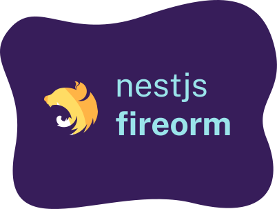

nestjs-fireorm

NestJS Fireorm
Wrapper for NestJS / Fireorm


nestjs-fireorm is a tiny Nest.js Fireorm module.
Fireorm 🔥 is a tiny wrapper on top of firestore that makes life easier when dealing with a Firestore database.
This module makes it easier to deal with Firestore database when using Nest.js!
docs: https://glebbash.github.io/nestjs-fireorm/
Let's get started!
npm i nestjs-fireorm
This module is based on Fireorm. The FireORM documentation is a great resource to
understand how nestjs-fireorm works. You'll need to add nestjs-fireorm to your root module,
which you can do like this:
import { Module } from '@nestjs/common';
import { FireormModule } from 'nestjs-fireorm';
@Module({
imports: [
FireormModule.forRoot({
fireormSettings: { validateModels: true },
}),
],
})
export class AppModule {}
There are other examples, which you can find in our repository app.module.ts.
To improve developer readability, we suggest using the same semantics as defined in Nest's
documentation on database. Like, when creating a User type, we suggest using the name
user.entity.ts:
import { Collection } from 'fireorm';
@Collection()
export class UserEntity {
id!: string;
}
Read more about Fireorm's core concepts on how entities should be defined.
Entities has to be imported in your module, and we expose a simple method to do this, which looks like this:
import { Module } from '@nestjs/common';
import { FireormModule } from 'nestjs-fireorm';
import { User } from './entities/user.entity';
@Module({
imports: [FireormModule.forFeature([User])],
})
export class AppModule {}
We'll need to inject the [repository]. nestjs-fireorm comes with a special InjectRepository
function, which is used like this:
import { InjectRepository } from 'nestjs-fireorm';
constructor(
@InjectRepository(User)
private users: BaseFirestoreRepository<User>
) {}
Documentation
Apart from this README, you can find examples of using the library in the following places:
Bootstrapped with: create-ts-lib-gh
This project is MIT Licensed.